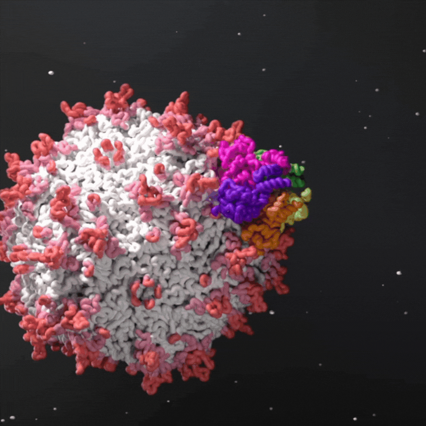

Victoria Xu
I am a structural biology researcher in Sarah Rouse's and Doryen Bubeck's groups at Imperial College London. I am interested in investigating molecular machineries using cryoEM.
My PhD was co-funded by Imperial and AstraZeneca (Cambridge, UK). In this project, I utilised single-particle analysis cryoEM, mass photometry and structural predictions to study how ssDNA is packaged into AAVs, a virus used as gene therapy vectors.

Publications
